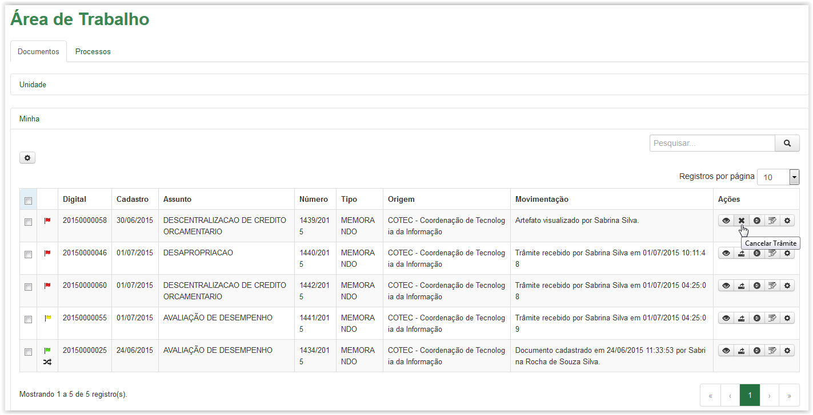
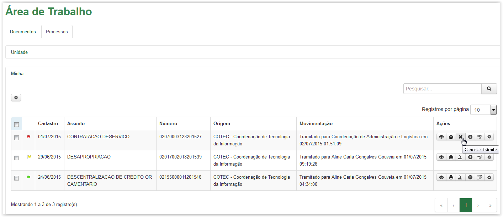
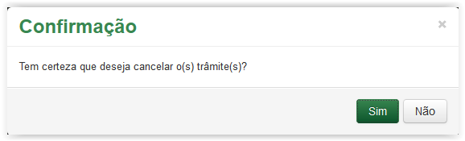
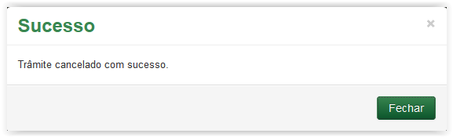
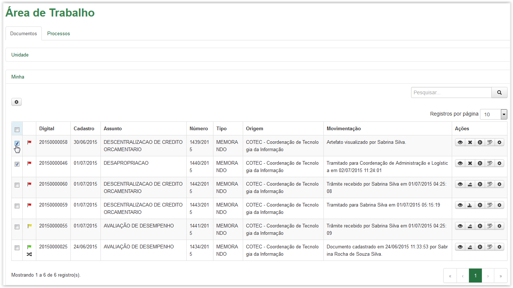
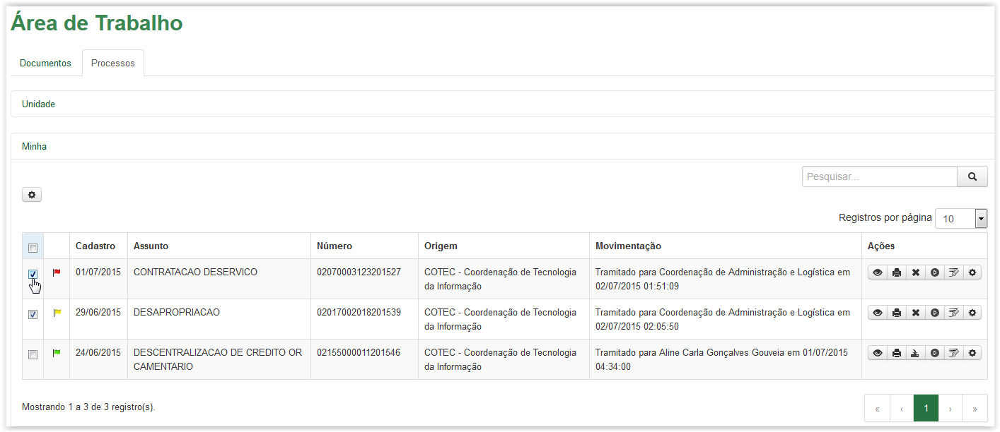
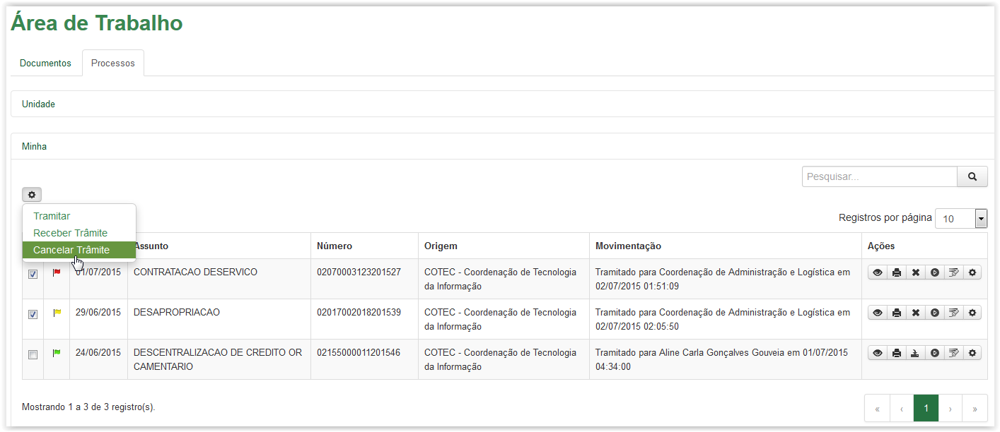
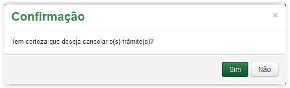
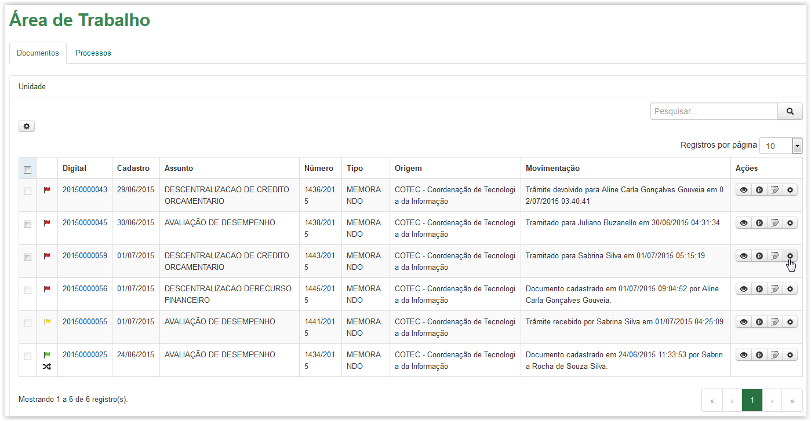
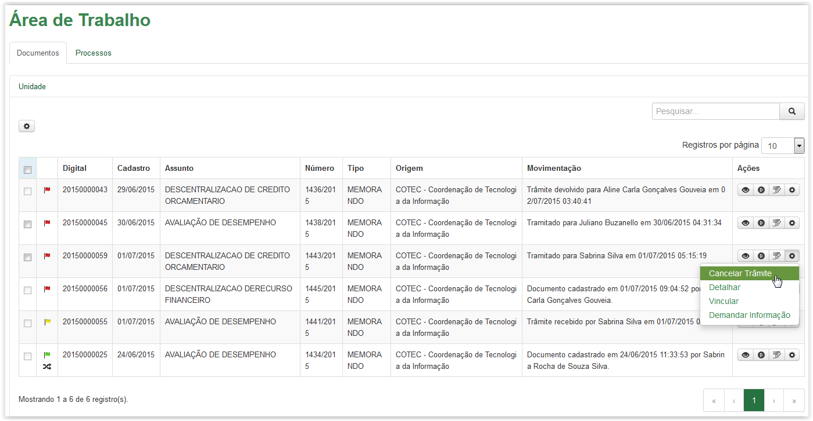

Cancelar trâmite
Para cancelar um único trâmite, clique no ícone disponível na coluna Ações da Área de Trabalho. Esse ícone está disponível tanto na aba de Documentos quanto na aba de Processos (Veja Nota):

Aba Documentos - Cancelar Trâmite

Aba Processos - Cancelar Trâmite
A mensagem de confirmação é apresentada:

Mensagem de confirmação para cancelar trâmite
Ao clicar no botão o sistema retorna para a Área de Trabalho sem efetuar o cancelamento. No entanto, ao clicar no botão , o sistema apresenta mensagem de sucesso:

Mensagem de sucesso
Após o cancelamento, o artefato fica disponível novamente para outro trâmite, a partir da Área Minha.
É possível cancelar vários trâmites de uma só vez. Assim, selecione os artefatos desejados, conforme abaixo:

Aba Documentos - Selecionando documentos para cancelamento do trâmite

Aba Processos - Selecionando processos para cancelamento do trâmite
Clique no ícone e selecione a opção Cancelar Trâmite:

Selecionando a opção Cancelar Trâmite
Após clicar na opção Cancelar Trâmite o sistema apresenta a mensagem de confirmação abaixo:

Mensagem de confirmação para cancelar trâmite
Ao clicar no botão  o sistema retorna para a Área de Trabalho sem efetuar o cancelamento. No entanto, ao clicar no botão , o sistema apresenta mensagem de sucesso:
o sistema retorna para a Área de Trabalho sem efetuar o cancelamento. No entanto, ao clicar no botão , o sistema apresenta mensagem de sucesso:
Mensagem de sucesso
Após o cancelamento, o artefato fica disponível novamente para outro trâmite, a partir da Área Minha.
IMPORTANTE!!
Lembrete:
O usuário poderá cancelar somente os artefatos (documento ou processo) tramitados por ele e que ainda não foram recebidos pelo destinatário.
Nota:
Quando o destino do trâmite é uma Unidade igual a de Origem, o cancelamento será feito na Área Unidade, clicando no ícone da coluna Ações na Área de Trabalho:

Área de trabalho - Ícone Opções
Após clicar no ícone selecione a opção Cancelar Trâmite:

Área de trabalho - Cancelar Trâmite
Created with the Personal Edition of HelpNDoc: Produce Kindle eBooks easily